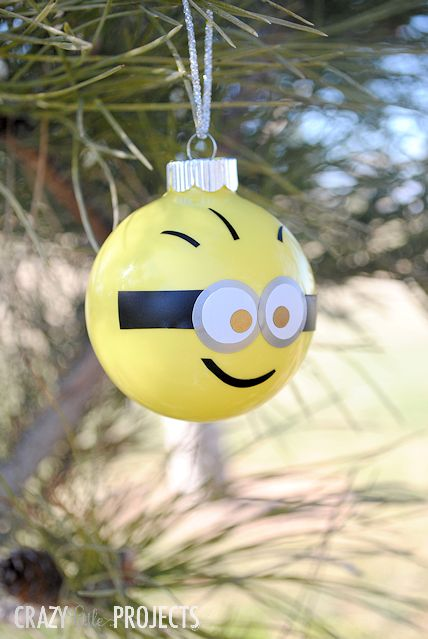
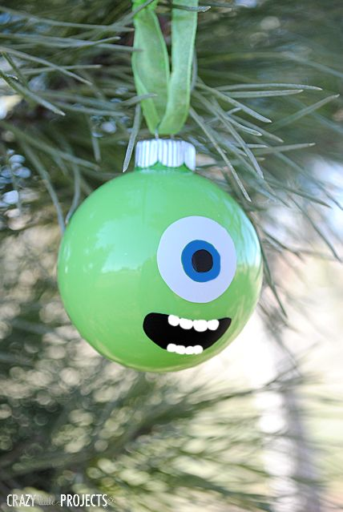
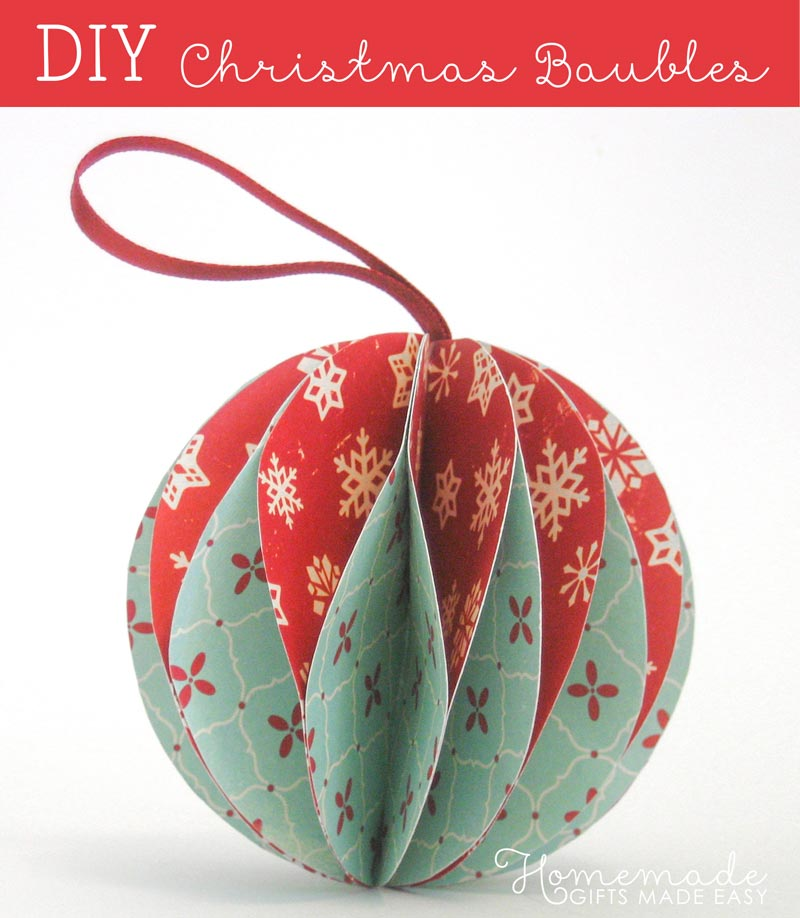
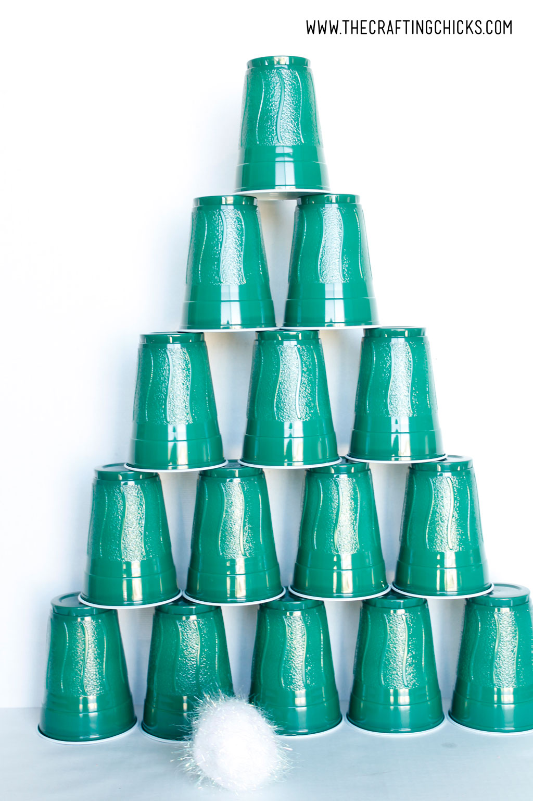
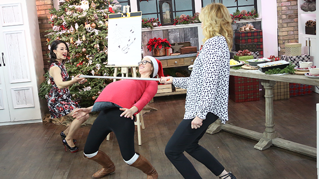

Christmas is right around the corner and the best way to spend time with your loved ones is to dedicate time and participate in activities for the family.Here are some acivities you can do with your family to prepare and enjoy the Christmas Season.
Kid's DIY Ornaments
Christmas Ornaments for Kids
Supplies Needed:
- Clear Glass Bulb Ornament
- Multi- surface Satin
- Vinyl
- Ribbon
Instructions
Take the top part off of the ornament and pour a bunch of paint inside.Now place your thumb over the top hole and shake to spread the paint. Add more as needed.
When it is completely coated, turn it upside down and let it dry in a paper cup or in the box that it came in, making sure the excess paint can drip out as it dries. Let it dry for a long time-maybe even overnight.
Then add the face! You can do this buy cutting out adhesive vinyl or with paint. I did a combination of the two.
 
DIY Christmas Baubles
Supplies Needed
- Colourful paper or card (or print some - see below)
- Pencils
- Something circular to trace around (e.g. a glass)
- Scissors
- Glue
- Tape
Instructions
Use your glass and pencil to draw 12 circles onto your paper and cut them out. I’ll use three different colours, but you can use as many or as few as you like.
Paper that has diferent colours on the back and front gives a nice effect, if you can find some.
Fold all the circles in half and stack them on top of each other.
Wrap a lenth of wire all the way around the stack, so that it runs along the fold. Twist the ends together to secure. You can just see the wire in this photo - it’s the thin black line down the middle.
Stick a glue dot onto a circle, about 1/3 of the way from the bottom. The dot is hard to see, so I’m pointing to it with a pencil. Fold the facing flaps together and press to secure the bond.
On the next circle along, stick a glue dot about 1/3 of the way from the top. Continue like this all the way around, alternating high and low glue dots.
Once you’ve glued all the adjacent flaps together, this is what the finished bauble looks like from the top and from the side.
Now you can attach a ribbon and hang it your Christmas tree. Or give it as a gift for someone else to hang on their tree.

Fun Christmas Games
Stacking Cup Christmas Tree Game
Supplies Needed:
- Large Green Cups
- Large White Poms Poms
Instructions
Begin by building a tree shape out of the green plastic cups.
You can make it whatever size you want. If you have a lot of kids playing you may want to do a smaller tree. I’d start with 4 cups on the bottom, 3 on the next level, 2 on the next, and then 1 for the top. Hand the kids the large white pom poms and let them throw. You could let them have 3 pom poms and if they don’t knock it down with those 3 they get back in line.
Once the cups are knocked down, the person goes to the back of the line and someone else gets a turn. While that is happening you quickly stack the cups back up into tree shape.

Santa Limbo
Supplies Needed:
- Limbo Stick
- Pillow
Instructions
Have participants put a "santa belly" under their shirt using a pillow. Place a limbo stick at a starting height. Then line up, and one by one try to limbo underneath (with the Santa belly) until everyone has tried.
Slightly lower the stick and have those who made it through go again. Continually lower the stick until one winner remains!
